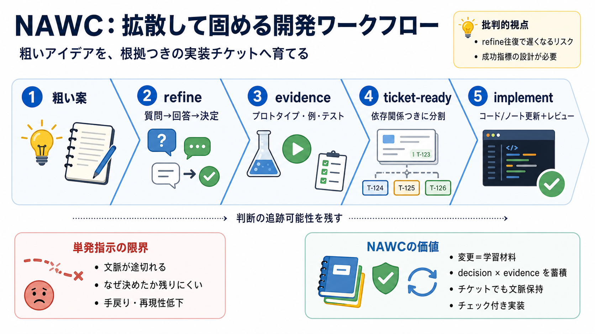

AGENTIC WORKFLOWS: Build & Sell AI Automations (2026)
Awesome. So it's then going to pull that file and then it's going to because it knows how to generate cloud skills sort …

Awesome. So it's then going to pull that file and then it's going to because it knows how to generate cloud skills sort …
Extend capabilities with Agent Skills. Agent Skills provide a structured way to equip your agents with specialized knowl…
want to later. So, how do these three layers work together? Let me just show you how this connects. Let's say that we gi…
## Agent Skills Skills are reusable, versioned capabilities that enable an AI agent to perform specific tasks on demand…
Your business, risk, and technology stakeholders now work with SMEs to agree upon and embed strategic and operational ch…